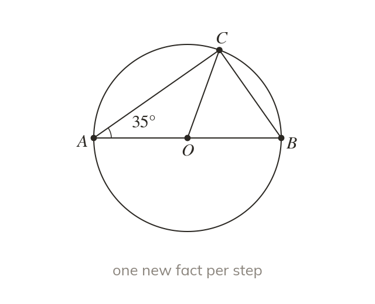
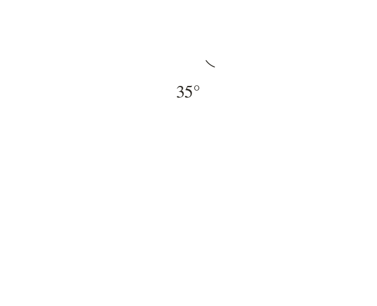

Chaining theorems
Solve one small step at a time. Each new angle becomes a known fact for the next step.
A multi-step circle problem is solved one small step at a time – one theorem (or ordinary angle fact) finds ONE new angle, which then becomes a known fact the next theorem can use. No single theorem usually reaches the target angle alone.